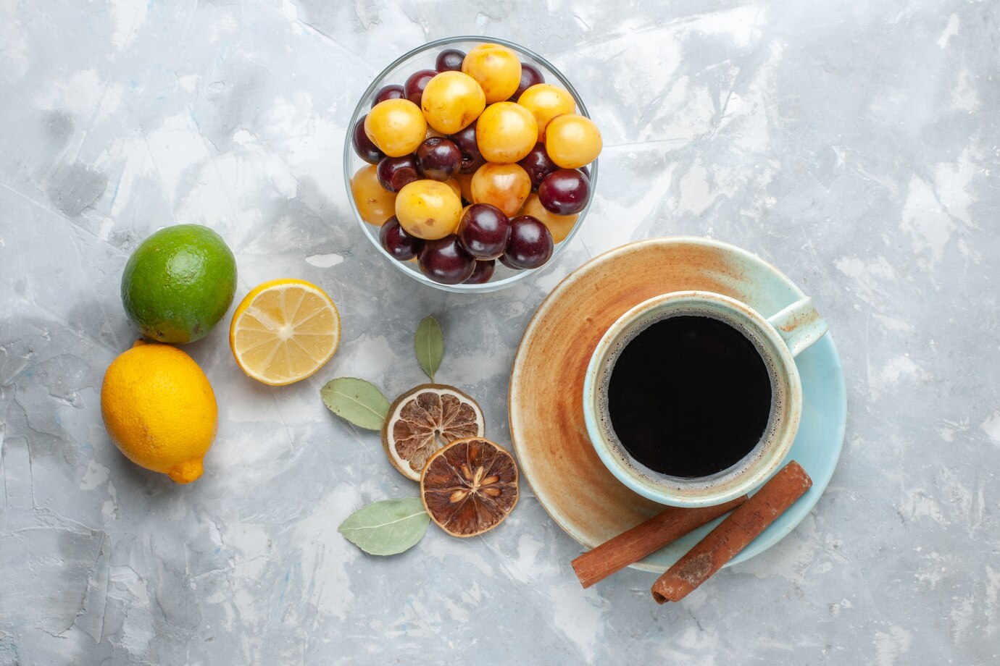

Sobre Nosotros
Agregar sabores frutados al café es una práctica que ha ganado popularidad debido a la diversificación de los perfiles de sabor que ofrece. La incorporación de notas frutadas no solo aporta complejidad y riqueza al aroma y sabor del café, sino que también proporciona una experiencia sensorial única.
¿Por qué mezclar café y frutas?
pues los expertos en el tema afirman que combinando esta bebida con alguna fruta se busca resaltar una característica en específico del sabor y aroma del café. Por un lado, algunos afirman que no se deben hacer mezclas con frutas muy ácidas. Otros afirman que la mejor manera de hacer una unión de fruta con café es mediante la cocción, pues facilita su incorporación en la bebida.
¿Como mesclar correctamente los sabores?
Algunos baristas recomiendan utilizar el kiwi, el banano, la piña, la mora, el mango y el coco: en general cualquier fruta que sea incorporable y tolere la cocción. Por ejemplo, si tu café tiene una marcada tonalidad ácida, le podrías añadir mandarina o naranja. Si por el contrario el tuyo es un cappuccino podrías agregar un poco del sabor de los frutos secos. Otra opción para la preparación es mezclar el café y la fruta durante el proceso de infusión, agregando los trozos de fruta con la molienda de café y vertiendo el agua previamente. Si lo que se desea es agregar una textura y sabor diferente al café, los cafés frappé son ideales para esto, agregar trozos de frutos secos dentro de la bebida vendrá bastante bien. Muchas son las mezclas que se pueden realizar entre frutas y los diferentes tipos de café, ¡comienza a experimentar y encuentra la que más te guste!